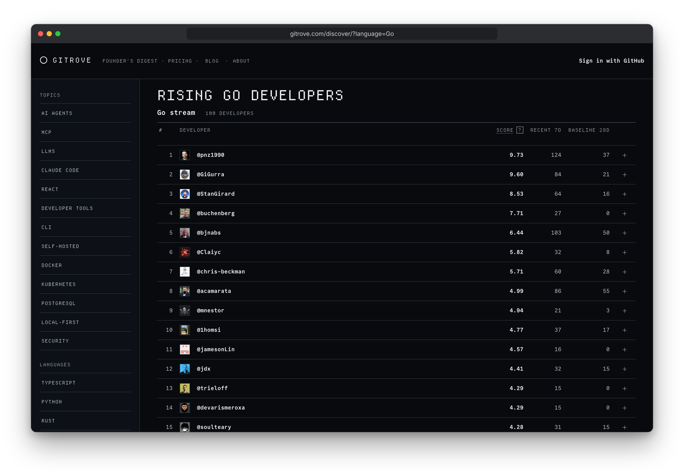
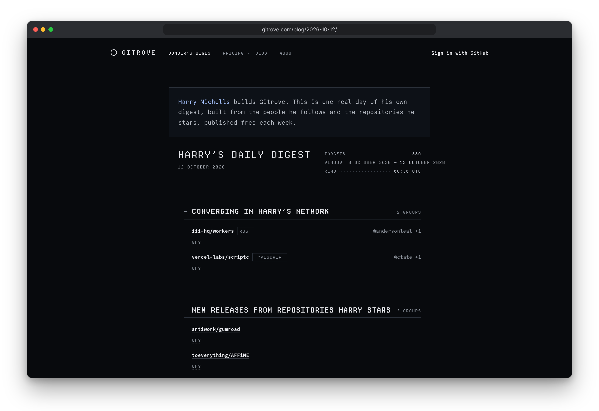

Inside gitrove
Read the full case study
How it works
gitrove is a discovery tool for open-source developers and repositories, built around a personal daily digest. A user signs in with GitHub, and gitrove watches the developers they follow and the repositories they star. Once a day it sends one digest: repositories where several people in their network are converging, new releases from starred repositories, who their follows started following, and everything else.
A free Discover page ranks rising developers by language and across 13 topic streams, such as MCP, AI agents and PostgreSQL. Ranking is relative to each developer's own baseline: their last 7 days of activity are compared with a 28-day baseline, smoothed by a constant. Minimum event and active-day floors keep out short bursts and bots. A weekly Founder's Digest, one real day of the founder's own digest, is published free on the blog as a sample. Pro has a 14-day trial, with billing through Stripe.
The backend is one Go binary on PostgreSQL. It uses the standard
library's net/http and pgx, with no web framework. Its subcommands
include serve, ingest,
migrate, collect and mail.
ingest loads GH Archive
hourly event files in a daily batch and is the only writer of the
ranking tables, with bot filtering and pruning.
collect refreshes each account's network mirror and
follow diffs through the GitHub API, and mail renders
and sends digests through listmonk. The frontend is
server-rendered Qwik City in TypeScript, with plain per-route CSS
for a dark monospace design. A pull-based deployer polls main
every minute and rolls back automatically. The app runs under
systemd behind a Cloudflare Tunnel, and each pull request gets its
own preview environment.


